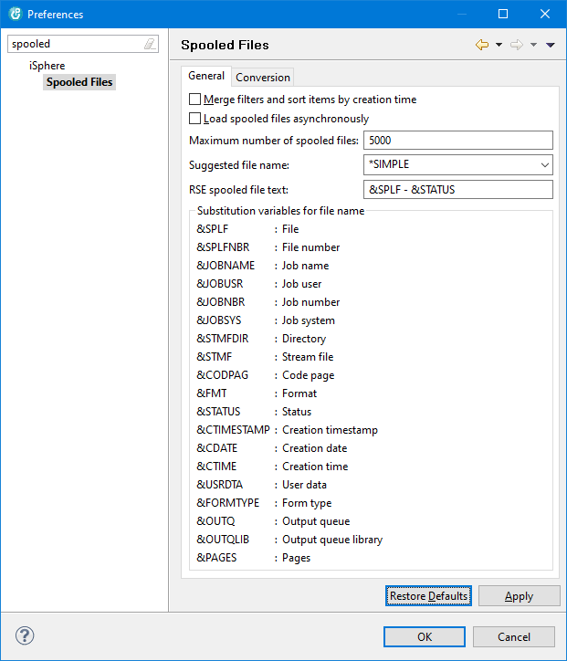
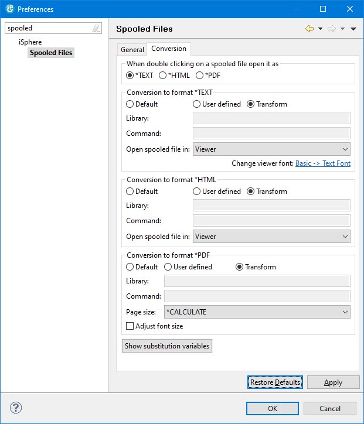
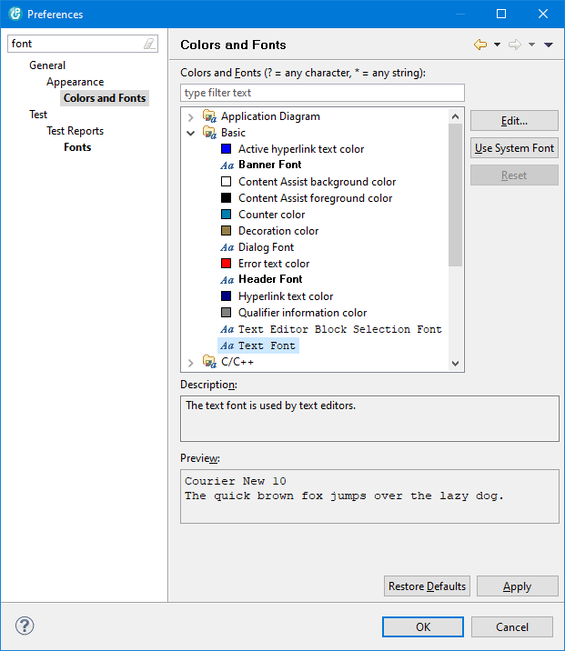

This section specifies general settings of the spooled file subsystem.

Specifies that the sub-results of a spooled file filter consisting of several filter strings are merged and sorted by creation time. For example, this option is useful for spooled file filter that select spooled files from different output queues, such as QEZJOBLOG and QEZDEBUG. By default the selected spooled files are returned and displayed in distinct groups. With this option checked, the results of both filter strings are merge and sorted by creation time.
Specifies whether spooled files are transfered to the PC asynchronously. When this option is checked, spooled files are transfered by a background process.
Specifies the maximum number of spooled files that are loaded for a selected spooled file filter. A message box is displayed, when the number of spooled files available exceeds the number of spooled files specified.
Specifies the file name that is suggested, when saving a spooled file. The possible options are:
| *DEFAULT | - | Constant value 'spooled_file', which matches the old behavior. |
| *QUALIFIED | - | Full qualified name, made of the attributes of the spooled file. Example: QPSRVDMP_3_724973_RADDATZ_TRADDATZD1_GFD400 |
| *SIMPLE | - | The simple name of the spooled file. Example: QPSRVDMP |
| user defined | - | Custom name. Optionally use the substitution variables to create a specific name for a given spooled file. |
Specifies the descriptive text that is displayed in the Remote System view next to the name of the spooled file. Use the substitution variables to create the descriptive text.
You have to refresh the iSphere Spooled Files subsystem by hand to update the text.
| &SPLF | : | File |
| &SPLFNBR | : | File number |
| &JOBNAME | : | Job name |
| &JOBUSR | : | Job user |
| &JOBNBR | : | Job number |
| &JOBSYS | : | Job system |
| &STMFDIR | : | Directory |
| &STMF | : | Stream file |
| &CODPAG | : | Code page |
| &FMT | : | Format |
| &STATUS | : | Status |
| &CTIMESTAMP | : | Creation timestamp |
| &CDATE | : | Creation date |
| &CTIME | : | Creation time |
| &USRDTA | : | User date |
| &FORMTYPE | : | Form type |
| &OUTQ | : | Output queue |
| &OUTQLIB | : | Output queue library |
| &PAGES | : | Pages |
This section specifies how spooled files are converted when selected for displaying or saving.

Specify in which format a spooled file will be opened when you double click on it in the spooled files subsystem.
The available options are:
| *TEXT | - | Open spooled file in plain text format. |
| *HTML | - | Open spooled file in HTML format. |
| - | Open spooled file as PDF document. |
For each of the three conversions (to Text, to HTML or to PDF), there are three possible conversions tools you can specify. Use the one which works best for you.
This option uses the free CVTSPLF command from http://www.freerpgtools.com/ to do the conversion.
This option uses the IBM spooled file transformer (Java class PrintObjectTransformedInputStream) and these three Workstation Customization Objects to do the conversion: ISPHERE/SPLFHTML, ISPHERE/SPLFPDF, ISPHERE/SPLFTXT
Use your own conversion tool. (There are a number vendors providing spooled file conversion tools.)
In field "Library" enter the library name which contains the conversion command.
In field "Command" enter the conversion command and parameters. Use the substitution variables shown at the bottom of the window to specify the parameters of the command.
Select Viewer to open spooled files in a viewer. Use Editor if you want to edit spooled files, that have been downloaded to your PC.
Click Change viewer font to jump to the Colors and Fonts preference page to change the font used by the spooled file viewer. Use option Basic -> Text Font to change the font:

Select Viewer to open spooled files in a viewer. Use Editor if you want to edit spooled files, that have been downloaded to your PC.
Select *CALCULATE to let iSphere determine the PDF page size from the spooled file attributes. Select any other page size to use a fix page size when transforming spooled files to PDF.
Select *FONT to use the font size of the spooled file viewer to compute the page size.
Check that option when you want iSphere to adjust the font size for best fit with the page size.
| Note: The font used for PDF conversion is always set to Courier and cannot easily be changed, due to restrictions of the external iText 5 library. At least there is no known way. |